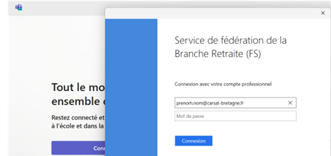
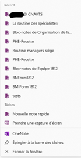

Dans un premier temps, si le PC n'est pas affecté à l'utilisateur, nous devons lui affecter un poste dans l'Active Directory, d'un PC qui a été masterisé préalablement en modifiant la description afin d'ajouter le nom et prénom de l'utilisateur.
Vérification des logiciels
La préparation de postes consiste ensuite à la vérification de logiciels précis qui sont les suivants :
Teams
Il faut d'abord connecter l'adresse électronique de l'utilisateur puis son mot de passe qu'il a fourni.
OneDrive

Afin que l'utilisateur ait une connexion avec le Cloud, et ses fichiers qui y sont stockés.
Outlook


Pour que l'utilisateur puisse avoir accès à sa messagerie électronique sur son nouveau PC.
OneNote
Afin d'ajouter manuellement les notes de l'utilisateur (stockées sur le Cloud).
Cisco Jabber

Pour finir cette configuration, on connecte cette application qui va permettre de recevoir les messages et appels de son téléphone professionnel directement sur son PC de travail (avec le H de la personne).